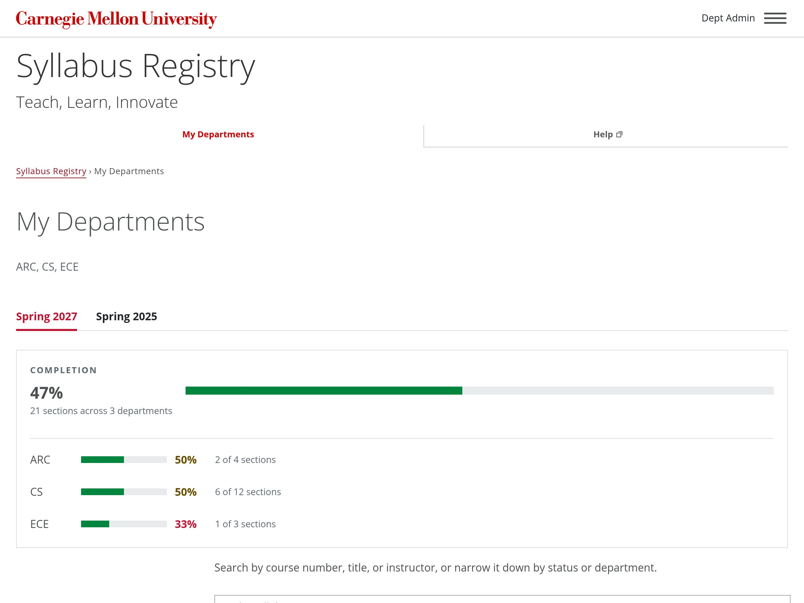

Messages and Progress
Telling people what happened or what everyone should know first, showing that something is loading, asking for a file in a dialog and showing how far along something is.
Flash Messages App
The result of what someone just did, shown once: "You're in line: 3 people ahead of you," or what went wrong. A tinted box with a rule down its left side: green when it worked, red when it didn't and gold for something to know that's neither, such as a deadline or a change that came with it.
- After a form sends someone to a new page, put it at the top of the page's content, above everything else, and show it only that once.
- For an error in one place, such as a dialog or one part of a form, put it right there.
-
Use
role="alert"on a message that appears without a page load, so screen readers announce it. - Not for standing notices that everyone should see, such as who a page is for: those are announcements, the template's full-width sections. An aside within a page's content, such as a tip or a warning, is a callout.
Give an error role="alert", so a screen reader reads it at once, and the
others role="status".
CMU's red alert bar at the very top of the page (#campusAlert) is for
campus emergencies. Don't use it for an app's messages.
Classes
cmu-flash, cmu-flash--success,
cmu-flash--notice, cmu-flash--error
Site Bar CMS
A slim gold bar at the top of every page, for a state that lasts until someone turns it off. Useful for a preview of unpublished changes, extra content switched on or a test account in development.
-
First in the header. Put it first in
<header>, in the layout every page uses, so it's on every page or none. There it lines up with the wordmark. - One short line. Name the state in bold, then say why it matters if that isn't obvious. The button and call to action go in a second paragraph, at the right.
-
A button ends the state, named for what it does, such as Stop
Previewing. Make it ghost (
ghost) when ending the state is the lesser choice. With several things on, the button turns them all off. - A call to action changes it, going to the place to choose, such as Choose Which Years to Show. A state with nothing to turn off gets only the call to action; a test account's goes to Developer Sign-In.
- Not for acting as another user. That has its own frame and bar, meant to be hard to miss; see Acting as Another User.
- Not for news or emergencies. A standing notice for everyone is an announcement, and a campus emergency is CMU's alert bar.
Classes
cmu-site-bar, ghost on its button,
cmu-site-bar--tape
In WordPress
In Appearance › Editor › Patterns › Header, add a Custom HTML block first, above the roof, with the bar's HTML.
A development or staging copy can add caution tape, a bar with no words
(cmu-site-bar--tape, with aria-hidden="true"), so a
screenshot of it can't pass for the real site. It goes first in the header, above a
gold bar if there's one:
In the layout, the bar goes first in the header, above the roof:
<header>
<div class="cmu-site-bar cmu-site-bar--tape" aria-hidden="true"></div>
<div class="cmu-site-bar">
<p><strong>Test account:</strong> Margaret Morrison, Team Captain.</p>
<p><a class="cta" href="/login">Switch Test Account</a></p>
</div>
<div class="roof red invert"> … </div>
<div id="sitename"> … </div>
</header>Announcements Template
A full-width section across the top of a page, right under the breadcrumbs, for
something everyone who comes to the page should know first: who the page is for, a
deadline, a change. Site authors write it and take it down; it says the same thing to
everyone. It's a content wide block in a template color. Keep to one at a
time, and a sentence or two.
-
Dark gray (
darkgrey invert) for who a page is for, with the text in bold. -
Gold for a time-sensitive update, with a bold lead-in. Gold takes
dark text and no
invert. When the whole notice is one short statement, make it a centered<h3>instead; center it with the template'saligncenter, not an inline style. -
Green (
green invert) for something newly available, with a call to action when there's a next step people can take. -
Blue (
blue invert) for a note set apart lower on the page, with an<h4>for small bold capitals. - Not red: A red section reads as a campus alert. And not for the result of something someone just did: that's a flash message. For an aside within a section, such as a tip or a warning, use a callout.
Classes
content wide, darkgrey invert, gold,
green invert, blue invert
Saying Who the Page Is For
A note in dark gray that says who the page is for and where everyone else should go:
Students: this page is for instructors and department administrators. Syllabi are available in the syllabus registry.
As a Short Notice
One line in gold:
Finals Week: Office hours follow a reduced schedule from May 4 to 12.
Centered
A notice centered with aligncenter:
Camera kits are limited this month. More arrive by mid-September; check back here for updates.
With a Call to Action
A question and a call to action, in green:
Ready for your next class project? Reserve a Camera Kit
With a Heading
A longer notice with a heading, in blue:
Holiday Hours
The checkout desk closes Dec. 19 and reopens Jan. 12. Return borrowed equipment before the break.
In Cascade
In the page's content, add a section with the green + on any section, then set its Type to Wide and its Style to Dark Grey, Gold, Green or Blue. Move it up to sit first on the page, with the arrows on its section.
Closable Section CMSScript
An announcement people can close: a heading, a sentence or two, an optional button and an × at the right, on a color. Use it as a full-width section, like an announcement, or as a block inside the page's content. On phones the × moves to the top corner and the button runs the full width.
-
Name the close button with
aria-labelandtitle, such as "Close Self-Guided Tours." It's an icon only, so the label is all a screen reader says, and the title shows as a tooltip. -
Add
data-cmu-closablewith a name to keep it closed in that browser. Use a new name when the content changes, so people who closed the old one see the new one. Without it, it's closed only until the page reloads. - The heading takes the level that fits where it is; it looks the same at any level.
-
A ghost button (
btn ghost) reads well on a dark color. -
Closing sends a
cmu-closeevent from the section, so a page's script can act on it, too. CallpreventDefault()on it to keep the section open.
The demos here don't remember being closed, so they come back when you reload. Keep one closed with a name:
<div class="content wide darkgrey invert cmu-closable" data-cmu-closable="tours-2026">Classes
cmu-closable, cmu-closable-text,
cmu-closable-actions, cmu-close,
data-cmu-closable
Full Width, With a Button
A full-width section in dark gray, with a ghost button:
Self-Guided Tours
Walk the campus art collection at your own pace, with a map and audio for each piece.
In the Content, Without a Button
A block inside the page's content, with only the heading, the text and the ×:
New This Semester
Equipment loans now last two weeks instead of one.
Loading Template
The template's spinner: two red circles that pulse in turn. Use it while something takes more than a moment, such as a search or a file being made, in the spot where the result will appear. Take it out when the result arrives. For the result itself, use a flash message, not the spinner's spot.
-
Say what's happening for screen readers. The spinner has no words,
so put them in a status line only screen readers hear, such as
<p class="sr-only" role="status">Checking the link.</p>. - It brings its own space: 100px above and below, centered, so it fills about the room a short result would.
- Not for a whole page. A page that loads normally gets no spinner.
Classes
spinner, double-bounce1, double-bounce2
Dialog App
A question that has to be answered before anything else, such as confirming something
that can't be undone, in a box over the page. Use the native
<dialog> element with showModal(); the browser handles
focus, Escape and the backdrop. Put the buttons in a
method="dialog" form, so either one closes it and the app can read which.
- Say what will happen in the heading and on the main button: Remove the Syllabus?, then Remove Syllabus, not Yes.
-
Cancel is a ghost button after the main one. In a form that checks
its fields, give it
formnovalidate, so it closes even with a required field empty. -
A form in a dialog works the same way; see the
file drop zone and the
ID tap. Inside a dialog, the
hiddenattribute works on anything, including buttons.
Classes
cmu-dialog, cmu-dialog-buttons
Chat App
A chat in the page’s bottom-right corner, with the app’s own mascot. The kit draws the launcher and the panel and handles opening, closing, sending and waiting. The app answers each question, from a list of answers, a search or a chatbot service.
-
Name: Chatterbuggy, unless you give it your own, in
.cmu-chat-titleand in the launcher’s words andtitle. -
Mascot:
data-cmu-chat-mascoton.cmu-chatnames a square picture, at least 96 × 96, shown in a circle on the launcher and beside each reply. While the panel is open, the launcher turns white, anddata-cmu-chat-mascot-opencan name a wide picture for it, about 2:1; without one, your mascot stays in its circle. With no mascot at all, it’s Chatterbuggy, the kit’s own buggy: facing you while closed, racing while open. CMU’s marks, its mascot included, aren’t covered by the kit’s license. -
Colors: replies are
--cmu-chat-reply, a pale peach that suits Chatterbuggy, and the user’s messages--cmu-chat-you, a pale blue. With your own mascot, set--cmu-chat-replyon.cmu-chatto a pale tint of its color. -
Answering: listen for
cmu-chat-sendon.cmu-chat.event.detail.textis the question, anddetail.reply(text)adds a reply and returns its bubble, to fill in as an answer arrives. Or add.cmu-chat-messageelements to.cmu-chat-logyourself, such as from the server. -
Choices are buttons in a
.cmu-chat-choicesafter a reply. Each sends its words as the user’s message, with itsvalueasdetail.value. -
Waiting: from a question until its reply, the log is
aria-busyand shows typing dots. Screen readers read the reply when it arrives. - Keyboard: Enter sends and Shift+Enter starts a new line. Escape closes the panel and returns to the launcher.
-
Across pages: a panel with an
idopens again on the next page in the same tab. Keeping the conversation is up to the app. - On phones, the panel fills the screen and the launcher is a circle with the mascot. Its words stay for screen readers and in its tooltip.
Style
Use the mascot’s name on the launcher: Ask Chatterbuggy. The first reply says what the chat can answer and asks people not to share private information. Choices start with a verb, since each one becomes the user’s message.
Classes
cmu-chat, cmu-chat-launcher,
cmu-chat-launcher-text, cmu-chat-panel,
cmu-chat-header, cmu-chat-title,
cmu-chat-close, cmu-chat-log, cmu-chat-message,
cmu-chat-message--user, cmu-chat-bubble,
cmu-chat-choices, cmu-chat-form, cmu-chat-send
Chatterbuggy
In Rails
Give .cmu-chat an id and
data-turbo-permanent, so the chat stays put, conversation and all, as
Turbo changes pages. To answer from the server, give .cmu-chat-log an
id and have a Turbo Stream append a .cmu-chat-message to
it.
Error Pages CMS
When a page can't be shown, say what happened in plain words and give people a way forward, inside the usual header, navigation and footer. Send the real HTTP status with the page, so browsers, search engines and monitoring see the error too. The app sends 403 and 404 in its own pages. The web server in front of it sends 502, 503 and 504 when the app is down or not answering, so keep those as plain files that ship with the app, in its own look.
- 404, Not Found: The address is wrong or the page moved. Offer the home page and the site's search, or its main list.
- 500, Something Went Wrong: The problem is on your end, so say so. Offer to try again, and say who to contact if it keeps happening. Serve it as a plain file the web server can send even when the app is down.
- 503, Down for Maintenance: Say when it will be back, in AP style: "until 6 p.m. Eastern." The web server sends this one too.
- 403, No Access: The user is signed in, but the page isn't for them. Say who it's for, not what's on it, how to get access if they should have it and where to go instead. Someone who isn't signed in yet should get the Sign-In Box instead.
- Keep codes and details out of the heading. The number can go in small text at the bottom, for anyone reporting it; stack traces and server messages belong in the logs.
-
Keep error pages out of search results with
<meta name="robots" content="noindex">in the page's<head>. Search engines don't index a page served with an error status, but an error page that can also be reached directly, returning 200, can be.
Classes
cmu-lead, cmu-cta-row, cmu-muted
When a Page Isn't Found
When the address doesn't match a page:
We Can't Find That Page
The page may have moved, or the address may have a typo.
Check the address, or start again from the home page.
Error 404
When Something Goes Wrong
When the problem is on the server:
Something Went Wrong
This page didn't load because of a problem on our end, not anything you did.
Try again in a few minutes. If it keeps happening, email the team with the page's address and what you were doing.
Error 500
When Someone Has No Access
When the user is signed in but isn't allowed to see the page:
You Don't Have Access to This Page
This page is for department administrators.
If you should have access, email the registry team with your Andrew ID and your department, and we'll add you.
Error 403
Progress Bars App
A headline number with a bar, and optional per-item rows below it. Set a bar's width with an inline style on a div (the template strips inline styles from spans). Color the percentage by how far along it is.
Classes
cmu-stat, cmu-stat-value, cmu-stat-sub,
cmu-meter, cmu-pct with --high,
--mid, --low, cmu-breakdown
- ARC90%
- CS55%
- ECE20%
In use, on a page for someone who looks after three departments:


Progress Through Steps App
How far someone is through a training, a course or a task that takes several sittings,
step by step. A red box at the top of the sidebar gives the name and a progress bar;
under it, each step is done, current or not started, with a marker on the right. Mark
the states in words too, for screen readers: a hidden "Done:", "Current:" or "Not
started:" before each name (sr-only), and
aria-current="step" on the current step's link. A step that can't be
opened yet is a <span> instead of a link. On phones the template
puts the sidebar under the content, so say where people are at the top of the content
too, such as "Step 3 of 6."
Classes
cmu-outline, cmu-outline-done,
cmu-outline-current,
cmu-meter--full
Step 3 of 6
Office Hours
The step's own content goes here, beside the steps.